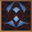
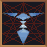

[HOME]
There are four main reasons for visiting a Temple. First, to get Swords and Armor Blessed; second, to be cured of Conditions; third, to Teleport to another Temple; fourth, to speak to the Priest/Priestess in order to gain information, accept Quests, etc.
[BLESS] The below table sets out the relevant information in a concise format. The YELLOW equation shows the BLESS FACTOR, the GREEN number the CURING FACTOR. (If you don't know what these are, find out by clicking the links above.) The clickable RED NOTES indicate further comments, listed below the table.[TELEPORT PRICES]
|  | SHRINE OF ASTALON |
20 + 80% | 70 | TELEPORT = YES Chapters 3 and 6 only |
||
| TEMPLE OF BANATH |
40 + 90% | 80 | TELEPORT = YES | |||
| TEMPLE OF DALA |
15 + 60% | 50 | TELEPORT = YES | NOTES | ||
| TEMPLE OF EORTIS |
30 + 85% | N/A | TELEPORT = NO | NOTES | ||
| TEMPLE OF GUISWA |
50 + 75% | 75 | TELEPORT = NO | |||
| CHAPEL OF ISHAP |
10 + 50% | 100 | TELEPORT = YES Chapter 6 = Special |
NOTES | ||
|  | Loriel TEMPLE OF ISHAP |
25 + 70% | 55 | TELEPORT = YES | NOTES | |
| Sarth TEMPLE OF ISHAP |
25 + 70% | 55 | TELEPORT = NO | NOTES | ||
| TEMPLE OF KAHOOLI |
25 + 70% | 65 | TELEPORT = YES | NOTES | ||
| TEMPLE OF KILLIAN |
25 + 75% | 65 | TELEPORT = YES | |||
| TEMPLE OF LIMS-KRAGMA |
20 + 60% | 150 | TELEPORT = YES | |||
| TEMPLE OF RUTHIA |
25 + 75% | 75 | TELEPORT = YES | |||
| TEMPLE OF SILBAN |
30 + 80% | 50 | TELEPORT = YES | NOTES | ||
| TEMPLE OF SUNG |
25 + 75% | 20 | TELEPORT = YES | NOTES | ||
| TEMPLE OF TITH |
25 + 70% | 65 | TELEPORT = YES | NOTES |
TEMPLE NOTES:
For more detail consult the WALKTHROUGHS or the MAP WEB.
TEMPLE OF DALA
In version 1.02 this Temple can not be reached in Chapter 6. A bug in version 1.01 allows you to TELEPORT to the Temple. For the (very interesting) resulting glitches, see the CHAPTER 6 WALKTHROUGH.
THE GRAIN QUEST: Talk to Risa, the High Priestess of Dala. Her food stores are empty. If you can bring her a Bag of Grain, she will reward you handsomely by raising your Characters' Defense Skills.
Although the Grain Quest can be accepted in Chapter 1, it can only be finished in Chapters 2 and 3.
When you first enter this Temple, priestess Beyla will give you a Quest to perform: Kill all fifteen Rusalki infesting the banks of the Romney river. When you leave the Temple you will be automatically cured of the Plague, if you have it (quite possible if you enter here in Chapter 2), but of nothing else.
This Quest is not an easy one to perform, but if you return to the Temple at any time subsequently, you can get cured of any Condition free of charge. This includes the recovery of any lost Health and Stamina points.
In Chapter 6, the TELEPORT service is unavailable, until you've helped Abbot Graves to escape.
Chapter 1: Abbot Graves is absent.
Chapter 2: Abbot Graves can sell you a ticket for Lecture #1
Chapter 3: Abbot Graves can sell you a ticket for Lecture #2
Chapter 6: Abbot Graves needs to escape. Unless you help him, the Chapel's Teleport is unavailable. Find Mitchel Waylander in Sloop - he will give you a NOTE. If you bring this NOTE to the Abbot, he will become extremely eloquent, and ultimately get lost. The Teleport service will now be available.
If your Characters have caught the Plague, don't go here to get them cured. Michele the Healer (in the nearby town of Loriel) will heal them all for 25 Gold Sovereigns.
In Chapter 6, Sarth can only be entered via the Mines, if you have the necessary MAP. Brother Marc will tell you where the MAP can be found (Eggley), but first you need Stellan's Key (Crossroads North of Krondor).
You can only talk to the Priest of Kahooli in Chapter 3. He can tell you who the Leader of the Nighthawks is, but first you have to prove yourself worthy of the Cause by performing an Act of Piety. In order to do this, you first have to visit the Prelate (East of the Temple). If you enter the Temple in a Starving Condition, the Priest will reveal the identity of the Nighthawk Leader.
When you first talk to the priestess of the Temple of Silban, she will ask you to deliver a message to the Franklin. The Franklin will be found in a house North-West of Eggley, and he will reward you. If you perform this Quest, a new Quest will become possible. Go to Eggley, talk to Devon, and then return to the Temple. The Priestess will now want you to locate the Collector. He will be found in Tanneurs. Afterwards you can return once more and collect your reward from the Priestess.